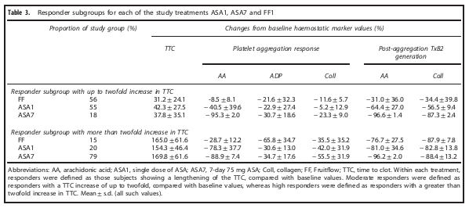

<?xml version="1.0" encoding="UTF-8"?>
<table title="table3" id="table3" class="tabcontent" xmlns="http://www.w3.org/1999/xhtml">
 <tr>
  <td>
   
   <p>../../cm-ucl/corpus-oa-pmr-v02/10.1038_ejcn.2016.222/tables/table3/table.png</p>
  </td>
  <td>
   <table class="table">
    <caption/>
    <tr>
     <th class="cell">Abbreviations: AA, arachidonic acid; ASA1, single dose of ASA; ASA7, 7-day 75 mg ASA; Coll, collagen; FF, Fruitfow; TTC, time to clot. Within each treatment, responders were defnied as those subjects showing a lengthening of the TTC, compared with baseline values. Moderate responders were defned as responders with a TTC increase of up to twofold, compared with baseline values, whereas high responders were defned as responders with a greater than twofold increase in TTC. Mean ± s.d. (all such values). </th>
    </tr>
   </table>
   <p>../../cm-ucl/corpus-oa-pmr-v02/10.1038_ejcn.2016.222/tables/table3/table.svg.html</p>
  </td>
 </tr>
</table>
